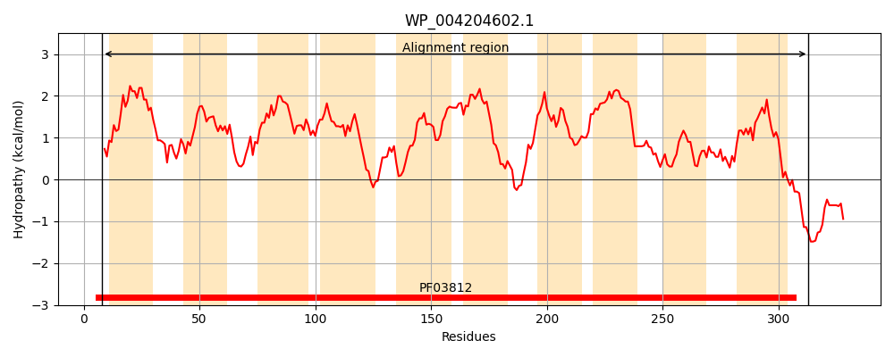
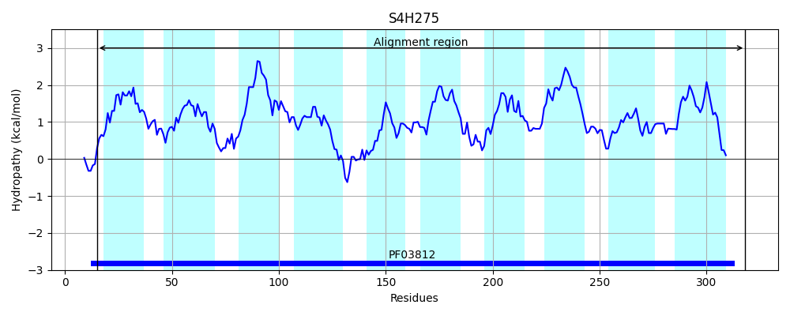
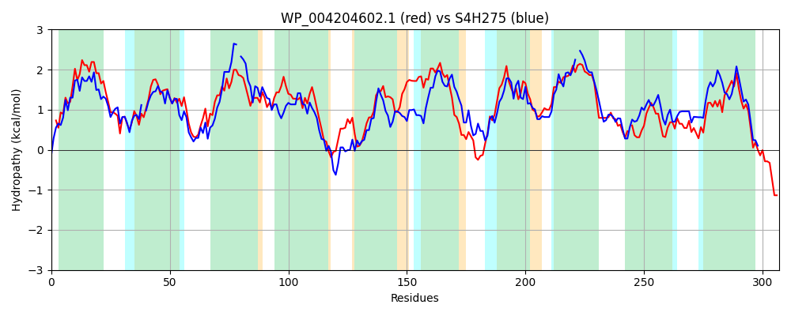

Hit Accession: S4H275
Hit TCID: 2.A.10.1.6
Hit Description: gnl|BL_ORD_ID|20032 gnl|TC-DB|S4H275|2.A.10.1.6 Putative 2-keto-3-deoxygluconate transporter OS=Gardnerella vaginalis JCP7275 GN=HMPREF1572_00459 PE=4 SV=1
Mach Len: 307
e:0.000000
Query TMS Count : 10
Hit TMS Count: 10
TMS-Overlap Score: 9.300000
Predicted Substrates:None
BLAST Alignment:
Score: 501 , Bit scores: 197 bits, E-value: 5.4e-61, Alignment length: 307, Percentage identity: 37
Query: 8 KMNKVPGGLIIIPLLVAILINTFAPQVLSIGGPTTALFKVGSSAMMGIFLLICGTSINIRQAGLPLYKGAVLLFLKCLAGALAVWAAGTLFGPSGFLGISTLALIACLTSSNSSLYIALCSNYGDASDAGAISVFCIKDGPFVTMMVLGVSGLANIPFAALLSMLIPLLIGMLWGNLDERFKQLCAAAQPLVIIIMSFAIGANSSINTVFTAGLSGILLGIISALTGIVFYFIYNLFLKKKSAL-GAALGTTAASSALTPAMVAQADPSLAMYVDAATAQLATASIITMITAPILVAWFDKRLKKRA 313
K K+PG I++PL + L+N+ P L IGG TTA+ G+ ++G F+L G S++ + A L++GAV++ +K L A+ + + F + LG+S L+++ +T +N++LY + +NYG D GA+++ I GP VTM+V+ SG A IPF ++ ++PL++GM+ GN K+ + +I+ F +GAN + + GLSG+LLGII L+G VF + + FL + S + GAA+ +TAAS+ TPA + DP+LA AT Q+A A IIT + P L A K+ K++
Sbjct: 15 KKIKIPGATIVVPLFIGCLVNSCFPASLKIGGFTTAVIN-GTGPLVGAFMLCIGASLSFKNAPKALWRGAVIISVKILT-AIVIALLVSKFCNNNLLGLSMLSILGAMTVANNALYSGITANYGTEVDRGAVAMTTISVGPTVTMIVMNSSGQAVIPFWQIVGSILPLVLGMILGNCFPYMKKQLVNGIIPITMILGFVLGANMNFAQLVEGGLSGVLLGII-VLSGFVFTVLADRFLTRGSGIAGAAISSTAASAVATPAAMMAIDPNLAKAALIATPQIAAAVIITALATPWLTALVSKKFAKKS 318 | Protein Hydropathy Plots: |
|---|
|  |  |
Pairwise Alignment-Hydropathy Plot:
|
|---|
|  |